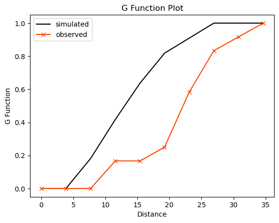
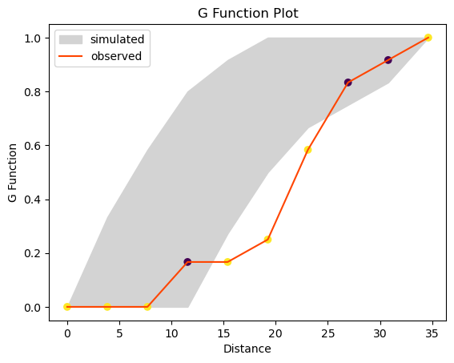
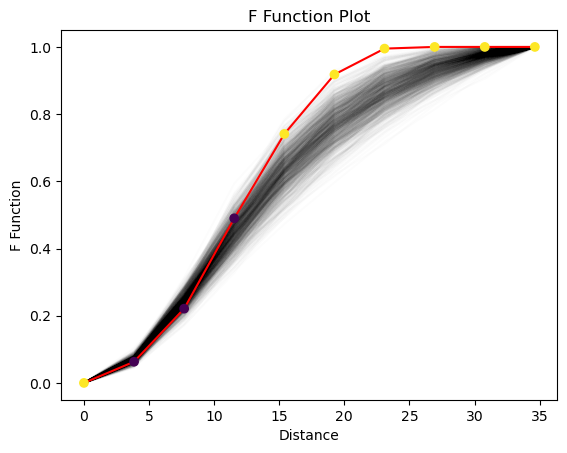
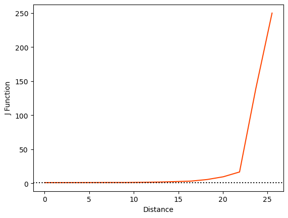
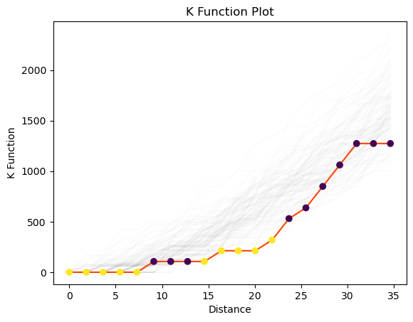
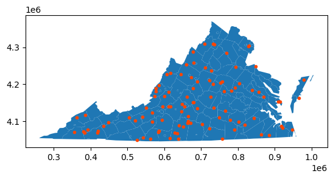
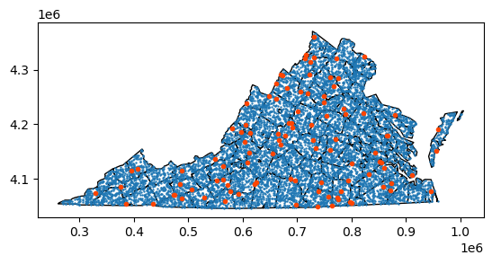
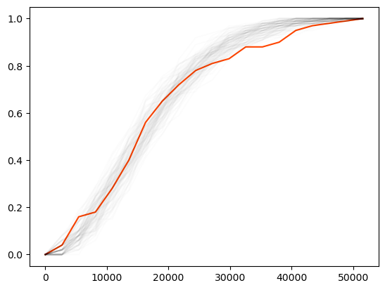

from scipy import spatial
import libpysal as ps
import numpy as np
%matplotlib inline
import matplotlib.pyplot as pltDistance Based Statistics for Point Patterns
points = np.array([[66.22, 32.54], [22.52, 22.39], [31.01, 81.21],
[9.47, 31.02], [30.78, 60.10], [75.21, 58.93],
[79.26, 7.68], [8.23, 39.93], [98.73, 77.17],
[89.78, 42.53], [65.19, 92.08], [54.46, 8.48]])import pointpatspointpats.__version__'2.3.0'import sklearn
sklearn.__version__'1.3.2'Nearest Neighbor Distance Functions
Nearest neighbour distance distribution functions (including the nearest “event-to-event” and “point-event” distance distribution functions) of a point process are cumulative distribution functions of several kinds – \(G, F, J\). By comparing the distance function of the observed point pattern with that of the point pattern from a CSR process, we are able to infer whether the underlying spatial process of the observed point pattern is CSR or not for a given confidence level.
\(G\) function - event-to-event
The \(G\) function is a kind of “cumulative” density describing the distribution of distances within a point pattern. For a given distance \(d\), \(G(d)\) is the proportion of nearest neighbor distances that are less than \(d\). To express this, we first need to define the nearest neighbor distance, which is the smallest distance from each observation \(i\) to some other observation \(j\), where \(j \neq i\): \[ min_{j\neq i}\{d_{ij}\} = d^*_i \]
With this, we can define the \(G\) function as a cumulative density function: \[G(d) = \frac{1}{N}\sum_{i=1}^N \mathcal{I}(d^*_i < d)\] where \(\mathcal{I}(.)\) is an indicator function that is \(1\) when the argument is true and is zero otherwise. In simple terms, \(G(d)\) gives the percentage of of nearest neighbor distances (\(d^*_i\)) that are smaller than \(d\); when \(d\) is very small, \(G(d)\) is close to zero. When \(d\) is large, \(G(d)\) approaches one.
Analytical results about \(G\) are available assuming that the “null” process of locating points in the study area is completely spatially random. In a completely spatially random process, the \(G(d)\) value should be: \[ G(d) = 1-e^{-\lambda \pi d^2} \] Practically, we assess statistical significance for the \(G(d)\) function using simulations, where a known spatially-random process is generated and then analyzed. This partially accounts for issues with irregularly-shaped study areas, where locations of points are constrained.
In practice, we use the ripley.g_test function to conduct a test on the \(G(d)\). It estimates a value of \(G(d)\) for a set of values (called the support). To compute the \(G\) function for ten values of \(d\) ranging from the smallest possible to the largest values in the data:
from pointpats import g_testg_res = g_test(points, support=10)g_res.supportarray([ 0. , 3.84791574, 7.69583148, 11.54374723, 15.39166297,
19.23957871, 23.08749445, 26.93541019, 30.78332593, 34.63124168])g_res.statisticarray([0. , 0. , 0. , 0.16666667, 0.16666667,
0.25 , 0.58333333, 0.83333333, 0.91666667, 1. ])g_res.pvaluearray([0.00e+00, 0.00e+00, 0.00e+00, 2.92e-02, 1.10e-03, 1.00e-04,
4.50e-03, 6.28e-02, 7.30e-02, 0.00e+00])Keeping simulations
To make a plot of the statistic, the statistic is generally plotted on the vertical axis and the support on the horizontal axis. Here, we will show the median simulated value of \(G(d)\) as well.
g_res = g_test(points, support=10, keep_simulations=True)plt.plot(g_res.support, np.median(g_res.simulations, axis=0),
color='k', label='simulated')
plt.plot(g_res.support, g_res.statistic,
marker='x', color='orangered', label='observed')
plt.legend()
plt.xlabel('Distance')
plt.ylabel('G Function')
plt.title('G Function Plot')
plt.show()
# grab the middle 95% of simulations using numpy:
middle_95pct = np.percentile(g_res.simulations, q=(2.5, 97.5), axis=0)
# use the fill_between function to color between the 2.5% and 97.5% envelope
plt.fill_between(g_res.support, *middle_95pct,
color='lightgrey', label='simulated')
# plot the line for the observed value of G(d)
plt.plot(g_res.support, g_res.statistic,
color='orangered', label='observed')
# and plot the support points depending on whether their p-value is smaller than .05
plt.scatter(g_res.support, g_res.statistic,
cmap='viridis', c=g_res.pvalue < .01)
plt.legend()
plt.xlabel('Distance')
plt.ylabel('G Function')
plt.title('G Function Plot')
plt.show()
\(F\) function - “point-event”
When the number of events in a point pattern is small, \(G\) function is rough. For the pattern contained in points, there are only 12 observations! This means that there are only 12 nearest neighbor distances, and thus only 12 possible values for the \(G(d)\) statistic, at any \(d\).
One way to get around this is to turn to an alternative, the \(F(d)\) function. This is analogous to the \(G(d)\) function, but measures the nearest neighbor distance from a set of known randomly-distributed points to a point in the observed pattern. Another way of thinking about \(F(d)\) is that it reflects a between-pattern measure of dispersion, where one pattern is completely spatially random and the other pattern is our observed pattern. In contrast, \(G(d)\) is a within-pattern measure of dispersion.
For a randomly simulated point pattern of size \(N_s\), this makes the \(F(d)\) function:
\[F(d) = \frac{1}{N_s} \sum_k^{N_s} \mathcal{I}(d^*_k < d)\]
This can have \(N_s\) possible values for any \(d\), and thus can give a much more fine-grained view of the point pattern. In this sense, the \(F(d)\) function is often called the empty space function, as it measures the distance from random points in “empty space” to the “filled” points in our point pattern. The number of those random points governs how “fine-grained” our measure of the observed point pattern can be.
Just like the ripley.g_test, this function is evaluated for every \(d\) in a support. Further, we can provide custom values for support, just in case we have known distance values of interest.
Below, we’ll use the same ten support values from \(G(d)\) function. And, let’s constrain the “simulated” point patterns to fall within the convex hull of our original point pattern:
from pointpats import f_test as ff_test = f(points, support = g_res.support, keep_simulations=True, hull='convex', n_simulations=999)plt.plot(f_test.support, f_test.simulations.T, alpha=.01, color='k')
plt.plot(f_test.support, f_test.statistic, color='red')
plt.scatter(f_test.support, f_test.statistic,
cmap='viridis', c=f_test.pvalue < .05,
zorder=4 # make sure they plot on top
)
plt.xlabel('Distance')
plt.ylabel('F Function')
plt.title('F Function Plot')
plt.show()
plt.show()
From this we see that the values of the \(F\) function are too high for distances from about 15 to 25, and (in contrast) for values between \(5 < d < 10\), the \(F(d)\) function has too few short distances. When the observed \(F(d)\) values are too large, then the pattern is too dispersed, or regular. If the empirical \(F(d)\) tends to fall below the simulated values, then it reflects clustering. This is the opposite of the interpretation of the \(G(d)\) function above, so be careful!
\(J\) function - a combination of “event-event” and “point-event”
The \(J\) function combines the \(G\) and \(F\) function, in an attempt to provide an immediate graphical indication of the clustering both internally and with respect to the empty space distribution. Practically, the \(J(d)\) function is computed as a kind of “relative clustering ratio”:
\[J(d) = \frac{1-G(d)}{1-F(d)}\]
where the numerator captures the clustering due to within-pattern distances and the denominator captures that for the pattern-to-empty distances. This means that when \(J(d)<1\), the underlying point process is a cluster point process, and when \(J(d)=1\), the underlying point process is a random point process; otherwise, it is a dispersed point process.
This function can suffer from numerical stability issues; as \(G(d)\) and \(F(d)\) both approach \(1\), the \(J\) ratio can become chaotic. Further, when \(G\) or \(F\) reaches one, the \(J\) function changes abruptly. As such, the \(J\) function is often truncated to the first \(1\) (either in \(F(d)\) or \(G(d)\)), and any \(d\) where both \(F\) and \(G\) are \(1\) is assigned a \(J\) value of \(1\).
from pointpats import j_test as jjp1 = j(points, support=20)/tmp/ipykernel_26245/134666654.py:1: UserWarning: requested 20 bins to evaluate the J function, but it reaches infinity at d=34.6312, meaning only 20 bins will be used to characterize the J function.
jp1 = j(points, support=20)As you can see from the warning above, the \(J\) function did encounter numerical stability issues at about \(d=25\). To address this, pointpats truncated the \(J\) function to only have 14 values in its support, rather than the \(20\) requested.
plt.plot(jp1.support, jp1.statistic, color='orangered')
plt.axhline(1, linestyle=':', color='k')
plt.xlabel('Distance')
plt.ylabel('J Function')Text(0, 0.5, 'J Function')
From the above figure, we see that the \(J\) function is above the \(J(d)=1\) horizontal line, especially as \(d\) gets large. This suggests that the process is over-dispersed.
Interevent Distance Functions
While both the \(F(d)\) and \(G(d)\) functions are useful, they only consider the distance between each point \(i\) and its nearest point. Earlier we spelled this distance \(d_i^*\), and the distance between \(i\) and \(j\) was \(d_{ij}\). So, note that \(d_{i}^*\) is the only term that matters for \(F\) and \(G\), if \(d_{ij}\) changes (but \(j\) isn’t closest to \(i\)), then the \(F\) and \(G\) functions generally remain the same.
So, further statistical summary functions have been developed to consider the whole distance distribution, not only the nearest neighbor distances. These functions (still considered part of the “Ripley” alphabet, are the \(K\), and \(L\) functions.
\(K\) function
The \(K(d)\) function is a scaled version of the cumulative density function for all distances within a point pattern. As such, it’s a “relative” of the \(G\) function that considers all distances, not just the nearest neighbor distances. Practically, the \(K(d)\) function can be thought of as the percentage of all distances that are less than \(d\). Therefore, for a threshold distance \(d\), the \(K\) function is defined as:
\[K(d) = \frac{1}{N\hat\lambda} \underset{i=1}{\overset{N}{\sum}}\underset{j=1}{\overset{N}{\sum}} \mathcal{I}\left(d_ij < d\right)\]
In this equation, \(\hat\lambda\) is the intensity of the point process. This represents how many points (on average) you would expect in a unit area. You can think of this as an analogue to the density of the points in the pattern: large values of \(\hat\lambda\) mean many points per area, and small values of \(\hat\lambda\) mean there are fewer points per area. Generally, this parameter is unknown, and is modelled using the average number of points in the study area. This assumes that the intensity of the point pattern is constant or homogeneous over the study area.
In the same manner as before, we can construct a set of \(K(d)\) function evaluations for random point patterns, and compare them to the observed \(K(d)\) function we saw in our original data.
from pointpats import k_test as kk_test = k(points, keep_simulations=True, n_simulations=99)plt.plot(k_test.support, k_test.simulations.T, color='k', alpha=.01)
plt.plot(k_test.support, k_test.statistic, color='orangered')
plt.scatter(k_test.support, k_test.statistic,
cmap='viridis', c=k_test.pvalue < .05,
zorder=4 # make sure they plot on top
)
plt.xlabel('Distance')
plt.ylabel('K Function')
plt.title('K Function Plot')
plt.show()
Again, we can see that the envelopes are generally above the observed function, meaining that our point pattern is dispersed. We can draw this conclusion because the distances are too small, suggesting the pattern is less clustered than otherwise woudl be expected. When points are too regular, their distances tend to be smaller than if they were distributed randomly.
CSR Example
In this example, we are going to generate a point pattern as the “observed” point pattern. This ensures that the data generating process is completely spatially random. Then, we will simulate CSR in the same domain for 100 times and construct evaluate the ripley functions for these simulations.
import geopandas
import libpysal as ps
df = geopandas.read_file(ps.examples.get_path("vautm17n.shp"))
state = df.geometry.cascaded_union/tmp/ipykernel_26245/3264935310.py:4: FutureWarning: The 'cascaded_union' attribute is deprecated, use 'unary_union' instead
state = df.geometry.cascaded_unionfrom pointpats.random import poissoncsr = poisson(state, size=100)csr[0:5]array([[ 392528.04579551, 4077062.60765435],
[ 711782.74903107, 4245360.48305302],
[ 593647.22771944, 4102442.85622552],
[ 616166.00712074, 4230904.07751182],
[ 731984.57021936, 4201204.81536705]])df.plot()
plt.scatter(*csr.T, color='orangered', marker=".")
plt.show()
realizations = poisson(state, size=(100,100))df.plot(facecolor='none', edgecolor='k')
plt.scatter(*realizations.T, marker='.', s=2)
plt.scatter(*csr.T, color='orangered', marker='.')
plt.show()
Let’s now compute the G function for the observed pattern as well as all the realizations we just made.
from pointpats import gobserved_g = g(csr)
comparison_g = [ g(realization, support=observed_g[0])
for realization in realizations]
plt.plot(*observed_g, color='orangered')
[plt.plot(*comparison, color='k', alpha=.01)
for comparison in comparison_g]
plt.show()
Clustered Process
from pointpats.random import cluster_poisson
import numpynumpy.random.seed(1234567)
clust = cluster_poisson(state, size=100, n_seeds=3,
cluster_radius=100000)df.plot()
plt.scatter(*clust.T, color='orangered', marker=".")
plt.show()observed_g_csr = g(csr)observed_g_clust = g(clust)
comparison_g = [ g(realization, support=observed_g[0])
for realization in realizations]
plt.plot(*observed_g_csr, color='orangered', label='CSR')
plt.plot(*observed_g_clust, color='blue', label='Clustered')
[plt.plot(*comparison, color='k', alpha=.01)
for comparison in comparison_g]
plt.ylabel("G(d)")
plt.xlabel("d")
plt.legend()
plt.show()